Bases
Syntaxe
public class NomDuProgramme {
public static void main(String[] args) {
instruction1;
instruction2;
instruction3;
}
}
Enregistrer et exécuter un programme NomDuProgramme.java
Dans la console, tapez la commande suivante :
javac *.java
puis pour exécuter le programme la commande :
java NomDuProgramme
Types de variables
Numériques
| Type | Type objet | Minimum | Maximum | Description |
|---|---|---|---|---|
| int (4o) | Integer | -2 147 483 648 | 2 147 483 647 | Nombre entier |
| short (2o) | Short | -32 768 | 32 767 | Nombre entier |
| long (8o) | Long | −9 223 372 036 854 775 808 | 9 223 372 036 854 775 807 | Nombre entier |
| float (4o) | Float | -3.4x1038f | 3.4x1038f | Nombre décimal |
| double (8o) (2 fois plus précis que float) | Double | -1.7x10308 | 1.1x10308 | Nombre décimal |
Caractères
| Type | Type objet | Valeurs possibles | Description |
|---|---|---|---|
| char (1o) | Char | Unicode (65 536 caractères possibles) | Nombre entier ou caractère (1 seul) entre '' |
| String (texte) | String | Infinité de caractères | Chaîne de caractères entre "" |
Autres types
| Type | Type objet | Description |
|---|---|---|
| Object | Object | Type indéfini (tous les autres types héritent de Object) |
| boolean | Boolean | Valeur pouvant être true ou false |
Commentaires
//Commentaire tenant sur une ligne
/*
Commentaire pouvant être sur une ou plusieurs lignes
*/
Opérations
| Instruction | Description |
|---|---|
| 1 + 2 | Renvoie 3 |
| 3 - 1 | Renvoie 2 |
| 6 * 4 | Renvoie 24 |
| 5.0 / 2.0 | Renoie 2.5 |
| 5 / 2 | Renvoie 2 (le quotient sans décimal) |
| 5 % 2 | Renvoie 1 (le reste de la division) |
Les variables
| Instruction | Description |
|---|---|
| type variable = valeur; | Déclare une nouvelle variable (à mettre au début d’une fonction en -ainsi) |
| int a; | Déclare la variable a comme int |
| a = 5; | Affecte 5 à une variable |
| a += 1; | Équivalent à a = a + 1; |
| a -= 1; | Équivalent à a = a - 1; |
| b = a++; | Équivalent à b = a; a = a + 1; |
| b = ++a; | Équivalent à a = a + 1; b = a; |
| b = a--; | Équivalent à b = a; a = a - 1; |
| b = --a; | Équivalent à a = a - 1; b = a; |
| int a = (int) b; | Convertit le nombre décimal b en nombre entier a |
| final float pi = 3.14; | Crée une variable constante (non modifiable) |
| static type variable = valeur; | Déclare une nouvelle variable qui n’est jamais détruite (si déjà exécuté, cette instruction est ignorée) |
| char caractere = 'c'; | Déclare une variable contenant un caractère |
| String texte = valeur; | Déclare une variable contenant une chaîne de caractère |
Les tableaux
| Instruction | Description |
|---|---|
| type tableau[] = new type[i]; | Crée un tableau vide de i éléments |
|
tableau[i] |
Renvoie la valeur du tableau à la position i (l'indice de la première valeur est 0) |
|
type tableau[] = {val1, val2…}; ou type tableau[] = new type{val1, val2…}; |
Crée un tableau de i éléments avec des valeurs personnalisées (i doit être une variable globale en norme -ainsi, définie avec #define) |
| tableau.length | Renvoie la longueur du tableau |
Conditions
Les conditions renvoient true si elle est respectée et false sinon
Opérateurs de comparaison
| Condition | Description de ce que vérifie la condition |
|---|---|
| a == b | a égal à b (seulement en contenu : 1="1") |
| a === b | a égal à b (en type et en contenu : 1≠"1") |
| a < b | a strictement inférieur à b |
| a > b | a strictement supérieur à b |
| a <= b | a inférieur ou égal à b |
| a >= b | a supérieur ou égal à b |
| a != b | a n’est pas égal à b (seulement en contenu : 1="1") |
| a !== b | a n’est pas égal à b (en type et en contenu : 1≠"1") |
| || | À mettre entre deux conditions, permet d’avoir une des deux conditions qui doit être vraie |
| && | À mettre entre deux conditions, permet d’avoir deux conditions qui doivent être vraie |
| !condition | La condition doit être fausse |
Tests de conditions
| Instruction | Description |
|---|---|
|
if (condition1) { instruction1; } |
Si condition1 est vraie, alors on exécute instruction1 |
|
if (condition1) { instruction1; } else { instruction2; } |
Si condition1 est vraie, alors on exécute instruction1, sinon, on exécute instruction2 |
|
if (condition1) { instruction1; } else if(condition2) { instruction2; } else { instruction3; } |
Si condition1 est vraie, alors on exécute instruction1, sinon, si condition2 est vraie, on exécute instruction2, sinon, on exécute instruction3 |
|
switch (nombre) { case a: instruction1; break; case b: case c: instruction2; break; default: instruction3; } |
Si nombre == a, alors on exécute instruction1, sinon, si nombre == b ou c, on exécute instruction2, sinon, on exécute instruction3 |
| a = (condition1) ? 1 : 0; | Si condition1 est vraie, a prend la valeur 1, sinon 0. |
Boucles
| Instruction | Description |
|---|---|
|
for (int i = d; i < f; i++) { instruction1; } |
On répète f-d fois instruction1 pour i allant de d compris à f non compris |
|
for (int i = d; i < f; i+=p) { instruction1; } |
On répète (f-d)/p fois instruction1 pour i allant de d compris à f non compris avec pour pas égal à p |
|
for (type elt: tableau) { instruction1; } |
On parcours le tableau (ou une chaîne de caractères) pour elt prenant toutes les valeurs du tableau |
|
while (condition) { instruction1; } |
On répète jusqu’à ce que condition soit fausse (peut ne pas être répété) |
|
do { instruction1; } while(condition); |
On répète jusqu’à ce que condition soit fausse (est forcément répété une fois) |
| break; | Permet de sortir d’une boucle sans la terminer (fortement déconseillé) |
Les méthodes et les classes
Les fonctions (ou les méthodes de la classe principale)
Les fonctions doivent être écrites juste après la méthode main.
Créer une fonction retournant une valeur du type « type0 »
public static type0 maFonction(type1 variable1, type2 variable2…) {
instructions;
}
Retourner une valeur de la fonction
return variable;
Créer une fonction retournant aucune valeur
public static void maFonction(type1 variable1, type2 variable2…) {
instructions;
}
Faire un appel à la fonction
variable = maFonction(valeur1, valeur2…);
ou (s'il n'y a pas de variable de retour)
maFonction(valeur1, valeur2…);
Les énumérations
Créer une énumération
Exemple :
public enum JoursSemaine {
LUNDI,
MARDI,
MERCREDI,
JEUDI,
VENDREDI,
SAMEDI,
DIMANCHE
}
Affecter une valeur de l'énumération
Exemple :
JoursSemaine jour = JoursSemaine.MERCREDI;
Les classes
Visibilités
- public : Peut être appelé en dehors de la classe
- private : Ne peut être appelé qu'au sein de la classe (pour des valeurs, il est préférable de créer des getter et des setter pour accéder à la valeur depuis l'extérieur)
- protected : Ne peut être appelé qu'au sein de la classe et dans les classes héritées
Les classes de base
Créer une classe
public class MaClasse {
private type1 variable1;
private type2 variable2;
public static type3 variableStatique3 = valeur;
visibilite MaClasse(type1 mVariable1, type2 mVariable2…) {
this.variable1 = mVariable1;
this.variable2 = mVariable2;
}
}
Définir la classe dans un objet
MaClasse monObjet = new MaClasse(valeur1, valeur2…);
Ajouter un affichage d’un message de la part de la classe (lors de l’exécution de System.out.println(monObjet)):
public String toString() {
return "message";
}
Créer une méthode (dans une classe)
visibilite type0 maMethode(type1 variable1, type2 variable2…) {
instructions;
}
Faire un appel d’une méthode autre que le constructeur et toString ou d’une variable dans une classe
this.maMethode(valeur1, valeur2…)
this.variable1 = valeur1;
Faire un appel d’une méthode autre que le constructeur et toString ou d’une variable en dehors d'une classe
monObjet.maMethode(valeur1, valeur2…)
monObjet.variable1 = valeur1;
Faire un appel d’une méthode ou d’une variable statique en dehors d'une classe
MaClasse.maMethode(valeur1, valeur2…)
MaClasse.variable1 = valeur1;
Les classes internes
Les classes internes sont des classes présentes dans une autre classe.
public class MaClasse {
private class MaClasseInterne {
}
}
L'héritage
L'héritage permet à des classes filles de reprendre les mêmes caractéristiques que leur classe mère, et d’ajouter des nouveaux attributs et/ou méthodes qui leur sont propres. Il est possible de faire un outrepassement d’une méthode de la classe mère, c'est-à-dire de créer une méthode du même nom qu’une méthode de la classe mère pour la remplacer. L’outrepassement peut être interdit avec le mot-clé « final ». Une classe ne peut hériter que d'une seule classe.
Créer une classe héritée d'une autre classe
public class MaClasseHeritee extends MaClasse {
private type4 variable4;
private type5 variable5;
public static type6 variableStatique6 = valeur;
visibilite MaClasseHeritee(type1 mVariable1, type2 mVariable2…, type4 mVariable4, type5 mVariable5…) {
super(mVariable1, mVariable2…);
this.variable4 = mVariable4;
this.variable5 = mVariable5;
}
}
Définir la classe dans un objet
MaClasse monObjet = new MaClasseHeritee(valeur1, valeur2…, valeur4, valeur5…);
ou
MaClasseHeritee monObjet = new MaClasseHeritee(valeur1, valeur2…, valeur4, valeur5…);
Ajouter un affichage d’un message de la part de la classe (lors de l’exécution de System.out.println(monObjet)):
public String toString() {
return (super.toString() + "message");
}
Récupérer le nom de la classe héritée
String nomType = monObjet.getClass().getName();
Les exceptions
Les classes d'exceptions permettent de gérer les erreurs possibles dans les programmes. Il est possible d'utiliser des exceptions prédéfinies ou d'en créer soi-même.
Exceptions prédéfinies
| Exception | Description |
|---|---|
| ClassCastException | Problème de cast |
| IllegalArgumentException | Problème d’argument |
| IndexOutOfBoundsException | Sortie du tableau |
| InputMismatchException | Saisie invalide à l’écran |
| NullPointerException | Variable nulle |
Créer une classe d'exception
public class MaClasseException extends Exception {
public MaClasseException(String message) {
super("Erreur : " + message);
}
}
Définir une méthode ou une fonction pouvant renvoyer une exception (en dehors de la classe d’exception)
visibilite type0 maMethode(type1 variable1, type2 variable2…) throws MaClasseException {
instructions;
}
Provoquer une erreur dans une méthode
throw new MaClasseException(message);
Traiter l'erreur
try {
instruction1;
} catch (MaClasseException e) {
instruction2;
} finally {
instruction3;
}
Les classes abstraites
Les classes abstraites sont des classes qui ne peuvent pas être instanciées et qui sont utilisées pour définir une structure de classe de base pour les classes dérivées. Les classes abstraites sont déclarées avec le mot-clé abstract. Elles peuvent contenir des méthodes abstraites, qui sont des méthodes déclarées sans corps. Les méthodes abstraites sont utilisées pour définir une interface pour les classes dérivées. Les classes dérivées doivent implémenter toutes les méthodes abstraites de la classe abstraite parente.
Créer une classe abstraite
public abstract class MaClasseAbstraite {
private type1 variable1;
private type2 variable2;
public static type3 variableStatique3 = valeur;
visibilite MaClasse(type1 mVariable1, type2 mVariable2…) {
this.variable1 = mVariable1;
this.variable2 = mVariable2;
}
}
Créer une méthode abstraite
visibilite abstract type0 maMethodeAbstraite(type1 variable1, type2 variable2…);
Créer une classe héritant d'une classe abstraite
public class MaClasseHeritee extends MaClasseAbstraite {
private type4 variable4;
private type5 variable5;
public static type6 variableStatique6 = valeur;
visibilite MaClasseHeritee(type1 mVariable1, type2 mVariable2…, type4 mVariable4, type5 mVariable5…) {
super(mVariable1, mVariable2…);
this.variable4 = mVariable4;
this.variable5 = mVariable5;
}
}
Implémenter une méthode abstraite (dans la classe fille)
@Override
visibilite type0 maMethodeAbstraite(type1 variable1, type2 variable2…) {
instructions;
}
Définir la classe dans un objet
MaClasseAbstraite monObjet = new MaClasseHeritee(valeur1, valeur2…);
ou
MaClasseHeritee monObjet = new MaClasseHeritee(valeur1, valeur2…);
Les interfaces
Les interfaces sont des classes abstraites qui permettent de définir un ensemble de méthodes sans les implémenter. Elles sont très utiles pour réduire la dépendance entre classes. Les classes peuvent implémenter plusieurs interfaces et doivent fournir une implémentation pour chacune des méthodes annoncées.
Créer une interface
public interface MonInterface {
}
Créer une méthode abstraite
visibilite type0 maMethodeAbstraite(type1 variable1, type2 variable2…);
Créer une classe implémentant une ou plusieurs interfaces
public class MaClasseHeritee extends MaClasseAbstraite implements MonInterface1, MonInterface2… {
private type4 variable4;
private type5 variable5;
public static type6 variableStatique6 = valeur;
visibilite MaClasseHeritee(type1 mVariable1, type2 mVariable2…, type4 mVariable4, type5 mVariable5…) {
super(mVariable1, mVariable2…);
this.variable4 = mVariable4;
this.variable5 = mVariable5;
}
}
Implémenter une méthode abstraite (dans la classe fille)
@Override
visibilite type0 maMethodeAbstraite(type1 variable1, type2 variable2…) {
instructions;
}
Définir la classe dans un objet
MonInterface monObjet = new MaClasseAbstraite(valeur1, valeur2…);
ou
MaClasseAbstraite monObjet = new MaClasseAbstraite(valeur1, valeur2…);
ou
MaClasse monObjet = new MaClasseAbstraite(valeur1, valeur2…);
Les classes anonymes
Les classes anonymes sont généralement des classes abstraites ou des interfaces définies directement dans un objet sans avoir à passer par une classe héritant d'une classe abstraite (ça peut également être une classe simple, mais c'est déconseillé). Chaque classe anonyme doit implémenter obligatoirement toutes les méthodes abstraites entre {}. Elle peut également contenir des méthodes non obligatoires à implémenter. Cela peut être utile si le code ne peut être exécuté que par un seul objet.
Manière simple
MaClasseAbstraite monObjet = new MaClasseAbstraite(valeur1, valeur2…) {
};
Expression lambda (ne fonctionne que si nous avons 1 seule méthode abstraite)
MaClasseAbstraite monObjet = (valeur1, valeur2…) -> {
instructions;
};
Les collections
Les collections sont des classes qui peuvent avoir un ou plusieurs type de données personnalisables.
Créer une collection
public class MaCollection<T1, T2…> {
private type1 variable1;
private type2 variable2;
private T1 variable3;
private T2 variable4;
public static type3 variableStatique3 = valeur;
visibilite MaClasse(type1 mVariable1, type2 mVariable2…, T1 mVariable3, T2 mVariable4…) {
this.variable1 = mVariable1;
this.variable2 = mVariable2;
this.variable3 = mVariable3;
this.variable4 = mVariable4;
}
}
Définir la collection dans un objet
MaCollection<TypeObjet1, TypeObjet2…> monObjet = new maCollection<>(valeur1, valeur2…, valeur4, valeur5…);
Les instructions
Instructions de bases
| Instruction | Description |
|---|---|
| System.out.print("texte"); | Affiche un texte dans la console |
| System.out.println("texte"); | Affiche un texte dans la console avec un retour à la ligne (peut être remplacé par \n, placé directement dans la chaîne) (pour une tabulation, entrez \t; \b : retour en arriere ; \f : nouvelle page) |
| System.out.println(variable); System.out.println("Valeur : " + variable); |
Affiche une variable (ici variable) dans la console |
| variable.getClass().getName(); | Renvoie le nom de la classe de la variable |
| chaine1.equals(chaine2); | Vérifie que la première chaîne est égale à la deuxième (fonctionne également avec les objets) |
| chaine1.concat(chaine2); | Concatène une chaîne avec une autre |
| chaine.toUpperCase(); | Renvoie la chaîne de caractères en majuscule |
| chaine.toLowerCase(); | Renvoie la chaîne de caractères en minuscule |
| chaine.length(); | Renvoie la longueur de la chaîne |
| chaine.trim(); | Supprime tous les espaces avant et après la chaîne |
| chaine.replace(ancien, nouveau); | Remplace tous les caractères par le nouveau |
| chaine.charAt(i); |
Les packages
Les bibliothèques
Importer une bibliothèque
import bibliotheque;
java.util (import java.util.*;)
Scanner (import java.util.Scanner;)
Scanner permet de lire des données entrées dans la console.
Dans la classe où vous souhaitez l’utiliser, ajoutez avant le constructeur :
private static Scanner entree = new Scanner(System.in);
| Instruction | Utilité |
|---|---|
| variable = entree.nextLine(); | Demande une valeur de type String avec le retour dans variable |
|
variable = entree.nextInt(); entree.nextLine(); |
Demande une valeur de type int de manière sécurisée avec le retour dans variable |
List (import java.util.List;)
List permet de créer des tableaux de valeurs d’une taille variable (c'est-à-dire des listes) et de pouvoir faire diverses manipulations facilement.
Les différentes listes possibles :
- ArrayList (import java.util.ArrayList;) : Plus rapide pour les opérations de recherche (il reprend le principe d'une liste chaînée)
- LinkedList (import java.util.LinkedList;) : Plus rapide pour les opérations d'ajout et de suppression (il reprend le principe d'un tableau)
| Instruction | Utilité |
|---|---|
| List<typeObjet> liste = new XXXList<>(); | Crée une liste vide |
| liste.get(i); | Renvoie la valeur à la position i |
| liste.add(valeur); | Ajoute une valeur dans la liste |
| liste.remove(i); | Enlève la valeur de la liste à la position i |
| liste.remove(valeur); | Enlève la valeur de la liste qui contient l’objet recherché |
| liste.size(); | Renvoie la longueur de la liste |
| List<typeObjet> nouvelleListe = liste.clone(); | Crée une copie de la liste |
| liste.isEmpty(); | Vérifie si la liste est vide |
| liste.indexOf(valeur); | Renvoie la position de la valeur recherchée ou -1 si elle n’est pas trouvée |
| liste.contains(valeur); | Vérifie si la liste contient la valeur recherchée |
Set (import java.util.Set;)
Set permet de créer des listes chaînées de valeurs obligatoirement différentes d’une taille variable (c'est-à-dire des listes) et de pouvoir faire diverses manipulations facilement.
Les différentes listes possibles :
- HashSet (import java.util.HashSet;) : Plus rapide pour l'accès et la manipulation des éléments (il reprend le principe du hachage)
- TreeSet (import java.util.TreeSet;) : Plus rapide pour trier les éléments (il reprend le principe d'un arbre)
| Instruction | Utilité |
|---|---|
| Set<typeObjet> liste = new XXXSet<>(); | Crée une collection vide |
| liste.add(valeur); | Ajoute une valeur dans la collection |
| liste.remove(valeur); | Enlève la valeur de la collection (renvoie false si elle n'a pas été trouvée) |
| liste.size(); | Renvoie la longueur de la collection |
|
Iterator iterateur = liste.iterator(); while (iterateur.hasNext()) { typeObjet element = (typeObjet)iterateur.next(); } |
Permet de parcourir la collection |
Map (import java.util.List;)
Map permet de créer des dictionnaires de valeurs d’une taille variable avec des valeurs associées à des clés.
Les différents dictionnaires possibles :
- HashMap (import java.util.HashMap;) : Plus rapide pour les opérations de recherche (il reprend le principe du hachage)
- TreeMap (import java.util.TreeMap;) : Éléments triés (il reprend le principe d'un arbre)
| Instruction | Utilité |
|---|---|
| Map<typeObjet1, typeObjet2> dictionnaire = new XXXMap<>(); | Crée un dictionnaire vide |
| dictionnaire.get(cle); | Renvoie la valeur associée à la clé |
| dictionnaire.put(cle, valeur); | Ajoute une valeur dans le dictionnaire |
L'interface graphique (import javax.swing.*; et import java.awt.*;)
Chaque fenêtre a son fichier java. La fenêtre principale n’est pas le programme principal. Elle sert à initialiser et ouvrir la fenêtre principale.
Syntaxe
import javax.swing.*;
import java.awt.*;
public class MaFenetre extends JFrame {
public MaFenetre() {
/* Instructions pour paramétrer la fenêtre */
this.setJMenuBar(this.creerBarreDeMenu());
this.setContentPane(this.creerPanel());
}
JMenuBar maBarreDeMenu;
private JMenuBar creerBarreDeMenu() {
maBarreDeMenu = new JMenuBar();
/* Instructions pour créer des menus */
return maBarreDeMenu;
}
JPanel monPanel;
private JPanel creerPanel() {
monPanel = (JPanel)getContentPane();
/* Instructions pour créer des widgets */
return monPanel;
}
}
Gestion de la fenêtre (construteur MaFenetre())
| Instruction | Description |
|---|---|
| UIManager.setLookAndFeel( UIManager.getSystemLookAndFeelClassName() ); |
Mettre le style du système d’exploitation au lieu du style de java par défaut (peut provoquer une erreur si le style est inexistant) |
| this.setTitle("nom de la fenêtre"); | Changer le nom de la fenêtre (en haut à gauche) |
| this.setIconImage(new ImageIcon("src/icone.png").getImage()); | Changer l’icône de l’application (en haut à gauche) |
| this.setSize(longueur, hauteur); | Redimensionner la fenêtre |
| this.setResizable(false); | Interdire le redimensionnement de la fenêtre |
| this.setExtendedState(JFrame.MAXIMIZED_BOTH); | Mettre la fenêtre en plein écran |
| this.setLocationRelativeTo(null); | Placer la fenêtre au centre de l'écran |
| this.setDefaultCloseOperation(actionFermeture); | Changer l'action au clic sur la croix :
|
| this.pack(); | Adapter la taille de la fenêtre à ses composants |
| this.setVisible(true); | Afficher la fenêtre (ouvre la fenêtre au moment où elle est appelée) |
Gestion de la barre de menu (creerBarreDeMenu())
| Instruction | Description |
|---|---|
|
JMenu menu1 = new JMenu("mon menu"); maBarreDeMenu.add(menu1); |
Créer un menu |
|
JMenuItem option1 = new JMenuItem("mon option"); menu1.add(option1); |
Créer un item d’un menu |
|
JMenuItem option1 = new JMenuItem("mon option", new ImageIcon("src/icone.png")); menu1.add(option1); |
Créer un item d’un menu avec une icône |
|
JCheckBoxMenuItem option2 = new JCheckBoxMenuItem("mon option"); menu1.add(option2); |
Créer un item à cocher d’un menu |
|
JRadioButtonMenuItem option3 = new JRadioButtonMenuItem("mon option"); menu1.add(option3); |
Créer un item radio d’un menu |
| menu1.addSeparator(); | Ajouter un trait de séparation |
| menu1.setIcon(new ImageIcon("src/icone.png").getImage()); | Ajouter une icône |
Gestion du panel (creerPanel())
Les différents layouts
| Instruction | Insertion de widgets | Description |
|---|---|---|
|
monPanel.setLayout(new FlowLayout()); monPanel.setLayout(new FlowLayout(FlowLayout.LEFT)); monPanel.setLayout(new FlowLayout(FlowLayout.RIGHT)); monPanel.setLayout(new FlowLayout(FlowLayout.CENTER, espacementH, espacementV)); |
monPanel.add(widget); | Place les composants les uns à la suite des autres de gauche à droite et de façon centrée par défaut, en passant à la ligne suivante si nécessaire (avec un espacement horizontal et un espacement vertical si les paramètres sont spécifiés) |
|
monPanel.setLayout(new GridLayout(nbLignes, nbColonnes)); monPanel.setLayout(new GridLayout(nbLignes, nbColonnes, espacementH, espacementV)); |
monPanel.add(widget, ligne, colonne); | Place les composants dans une grille, soit dans une case spécifiée, soit dans la prochaine case vide si rien n'est renseigné (avec un espacement horizontal et un espacement vertical si les paramètres sont spécifiées) |
|
monPanel.setLayout(new BorderLayout()); monPanel.setLayout(new BorderLayout(espacementH, espacementV)); |
monPanel.add(widget, BorderLayout.CENTER); monPanel.add(widget, BorderLayout.NORTH); monPanel.add(widget, BorderLayout.SOUTH); monPanel.add(widget, BorderLayout.WEST); monPanel.add(widget, BorderLayout.EAST); |
Découpe l'écran en 5 régions (avec un espacement horizontal et un espacement vertical si les paramètres sont spécifiées) |
| monPanel.setLayout(null); | widget.setBounds(x, y, largeur, hauteur); | Place les widgets de manière absolue grâce à des valeurs personnalisées (fortement déconseillé) |
Gestion des widgets
Instructions en commun pour tous les widgets
| Instruction | Description |
|---|---|
| widget.setLocation(x, y); | Changer les coordonnées du widget à partir du bord en haut à gauche |
|
widget.setWidth(largeur);
widget.setHeigth(hauteur); |
Changer la taille du widget |
| widget.setBackground(new Color (r, g, b)); | Changer la couleur du fond |
|
widget.setBorder( BorderFactory.createLineBorder( new Color(r, g, b) ), epaisseur ); |
Changer la bordure |
| widget.setForeground(new Color (r, g, b)); | Changer la couleur du texte |
| widget.setOpaque(booleen); | Rendre visible ou invisible l’arrière-plan |
| widget.setVisible(booleen); | Rendre visible ou invisible le widget |
|
int x = widget.getX();
int y = widget.getY(); |
Récupérer les coordonnées du widget à partir du bord en haut à gauche |
|
int largeur = widget.getWidth();
int hauteur = widget.getHeigth(); |
Récupérer la taille du widget |
Les différents widgets
JLabel (Ajouter du texte)
| Instruction | Description |
|---|---|
|
label0 = new JLabel("Mon texte"); label0 = new JLabel("Mon texte", SwingConstants.CENTER); |
Créer le widget (doit être initialisé dans la classe) |
| label0.setFont(new Font("Calibri", Font.PLAIN, taille)); | Changer le style et la taille du texte (Normal : Font.PLAIN ; Italique : Font.ITALIC ; Gras : Font.BOLD) |
| label0.setText("message"); | Changer le texte |
| String monTexte = label0.getText(); | Récupérer le texte |
Image (Ajouter une image avec ImageIcon et Image)
| Instruction | Description |
|---|---|
| ImageIcon image0 = new ImageIcon("src/image.png"); | Ouvrir une image |
| Image image0AModifier = image0.getImage(); | Permettre de faire les modifications de l’image grâce aux instructions ci-dessous |
|
image0AModifier = image0AModifier.getScaledInstance( largeur, hauteur, Image.SCALE_SMOOTH ); |
Changer la taille de l’image |
| image0 = new ImageIcon(image0AModifier); | Appliquer les modifications sur l’image ouverte (sans écraser le fichier) |
| label1 = new JLabel(image0); | Créer le widget contenant l’image (doit être initialisé dans la classe) |
JButton (Ajouter un bouton simple)
| Instruction | Description |
|---|---|
| bouton0 = new JButton("Mon bouton"); | Créer le widget (doit être initialisé dans la classe) |
| bouton0.setEnabled(booleen); | Débloquer ou bloquer le bouton |
| bouton0.setFont(new Font("Calibri", Font.PLAIN, taille)); | Changer le style et la taille du texte (Normal : Font.PLAIN ; Italique : Font.ITALIC ; Gras : Font.BOLD) |
| bouton0.setText("message"); | Changer le texte |
| String monTexte = bouton0.getText(); | Récupérer le texte |
JToggleButton (Ajouter un bouton ON/OFF)
| Instruction | Description |
|---|---|
| bouton1 = new JToggleButton("Mon interrupteur", booleen); | Créer le widget (doit être initialisé dans la classe) |
| bouton1.setEnabled(booleen); | Débloquer ou bloquer le bouton |
| bouton1.setFont(new Font("Calibri", Font.PLAIN, taille)); | Changer le style et la taille du texte (Normal : Font.PLAIN ; Italique : Font.ITALIC ; Gras : Font.BOLD) |
| bouton1.setSelected(booleen); | Activer ou désactiver le bouton |
| bouton1.setText("message"); | Changer le texte |
| String monTexte = bouton1.getText(); | Récupérer le texte |
| ButtonGroup groupeBoutons0 = new ButtonGroup(); | Créer un groupe de boutons (pour avoir une sélection unique) |
|
groupeBoutons0.add(bouton1); groupeBoutons0.add(bouton2); |
Ajouter un bouton dans un groupe |
JCheckbox (Ajouter une case à cocher)
| Instruction | Description |
|---|---|
|
box1 = new JCheckBox("Cocher ici"); box2 = new JCheckBox("Cocher également ici"); |
Créer le widget (doit être initialisé dans la classe) |
| box1.setFont(new Font("Calibri", Font.PLAIN, taille)); | Changer le style et la taille du texte (Normal : Font.PLAIN ; Italique : Font.ITALIC ; Gras : Font.BOLD) |
| box1.setText("message"); | Changer le texte |
| String monTexte = box1.getText(); | Récupérer le texte |
| box1.isSelected(); | Vérifier si la case est sélectionnée |
| box1.setSelected(booleen); | Sélectionner ou désélectionner la case |
JRadioButton (Ajouter un bouton radio (sélection unique))
| Instruction | Description |
|---|---|
|
radio1 = new JRadioButton("Cocher ici"); radio2 = new JRadioButton("Cocher plutôt ici"); |
Créer le widget (doit être initialisé dans la classe) |
| radio1.setFont(new Font("Calibri", Font.PLAIN, taille)); | Changer le style et la taille du texte (Normal : Font.PLAIN ; Italique : Font.ITALIC ; Gras : Font.BOLD) |
| radio1.setText("message"); | Changer le texte |
| String monTexte = radio1.getText(); | Récupérer le texte |
| radio1.isSelected(); | Vérifier si le bouton radio est sélectionné |
| radio1.setSelected(booleen); | Sélectionner ou désélectionner le bouton radio |
| ButtonGroup groupeRadios0 = new ButtonGroup(); | Créer un groupe de boutons radios (pour avoir une sélection unique) |
|
groupeRadios0.add(radio1); groupeRadios0.add(radio2); |
Ajouter une radio dans un groupe |
JComboBox (Ajouter une liste d’options)
| Instruction | Description |
|---|---|
JList (Ajouter une liste de données)
| Instruction | Description |
|---|---|
JTextField (Ajouter une zone de saisie simple)
| Instruction | Description |
|---|---|
JTextArea (Ajouter une zone de saisie longue)
| Instruction | Description |
|---|---|
Les différents conteneurs
Les conteneurs sont des widgets qui peuvent regrouper plusieurs autres widgets.
JPanel (widget de regroupement simple)
| Instruction | Description |
|---|---|
| panel1 = new JPanel(); | Créer le widget (doit être initialisé dans la classe) |
|
panel1.setBorder( BorderFactory.createLineBorder( new Color (r, g, b) ), epaisseur ); |
Ajouter une bordure simple au panneau |
|
panel1.setBorder( BorderFactory.createTitleBorder("titre") ); |
Ajouter une bordure titrée au panneau |
JTabbedPane
| Instruction | Description |
|---|---|
JScrollPane
| Instruction | Description |
|---|---|
Gestion du menu déroulant apparaissant au clic droit (JPopupMenu)
| Instruction | Description |
|---|---|
|
JPopupMenu pop = new JMenu("mon menu"); widget.setComponentPopupMenu(pop); |
Créer un menu |
|
JMenuItem option1 = new JMenuItem("mon option"); pop.add(option1); |
Créer un item d’un menu |
|
JMenuItem option1 = new JMenuItem("mon option", new ImageIcon("src/icone.png")); pop.add(option1); |
Créer un item d’un menu avec une icône |
|
JCheckBoxMenuItem option2 = new JCheckBoxMenuItem("mon option"); pop.add(option2); |
Créer un item à cocher d’un menu |
|
JRadioButtonMenuItem option3 = new JRadioButtonMenuItem("mon option"); pop.add(option3); |
Créer un item radio d’un menu |
| pop.addSeparator(); | Ajouter un trait de séparation |
Les événements (import java.awt.event.*; ou java.awt.AWTEvent.*;)
Les différents écouteurs d’événements
Écouteurs simples (la classe utilisée est son propre écouteur)
widget.addXXXListener(this);
Écouteurs en classe interne
widget.addXXXListener(new MonEcouteurXXX());
Écouteurs en classe anonyme
widget.addXXXListener(new XXXListener() {
/* implémentationDesMéthodes */
});
La gestion des événements
Chaque événement utilise une méthode d’enregistrement, qui nécessite d’implémenter des méthodes qui exécute des instructions selon l’événement.
Chacune de ces méthode doit être précédée du mot-clé : @Override, qui indique à l'interpréteur que l’on surcharge ou implémente une méthode correctement.
Pour récupérer le composant source, il est possible d’utiliser e.getSource()
ActionListener
ActionListener est l’écouteur le plus utilisé pour des événements simples comme des clics sur des boutons, touche Entrée dans une zone de saisie, etc.
Composants concernés :
- JButton
- JRadioButton
- JCheckBox
- JComboBox
- JTextField
Méthode d'enregistrement : addActionListener()
| Méthodes à implémenter | Exécution |
|---|---|
| actionPerformed(ActionEvent e) | Après un clic, la touche Entrée… |
ChangeListener
ChangeListener est l’écouteur le plus souvent utilisé détecter des changements.
Composants concernés :
- JRadioButton
- JCheckBox
- JComboBox
Méthode d'enregistrement : addChangeListener()
| Méthodes à implémenter | Exécution |
|---|---|
| stateChanged(ChangeEvent e) | Dès le changement d'état du composant |
AdjustementListener
AdjustementListener détecte les ajustements d’une barre de défilement.
Composants concernés :
- JScrollBar
Méthode d'enregistrement : addAdjustmentListener()
| Méthodes à implémenter | Exécution |
|---|---|
| adjustmentValueChanged(AdjustmentEvent e) | Dès le changement du niveau de la barre de défilement |
ComponentListener
ComponentListener détecte les déplacements, l’affichage, le masquage ou la modification de la taille d’un composant (par exemple une fenêtre).
Composants concernés :
- Component (tous)
Méthode d'enregistrement : addComponentListener()
| Méthodes à implémenter | Exécution |
|---|---|
| componentHidden(ComponentEvent e) | Dès que le composant a été caché |
| componentMoved(ComponentEvent e) | Dès que le composant a été déplacé |
| componentResized(ComponentEvent e) | Dès que le composant a été redimensionné |
| componentShown(ComponentEvent e) | Dès que le component a été affiché |
ContainerListener
ContainerListener détecte des ajouts ou des suppressions des composants dans un conteneur.
Composants concernés :
- Component (tous les conteneurs)
Méthode d'enregistrement : addContainerListener()
| Méthodes à implémenter | Exécution |
|---|---|
| componentAdded(ContainerEvent e) | Dès l’ajout d’un composant dans le conteneur |
| componentRemoved(ContainerEvent e) | Dès la suppression d’un composant dans le conteneur |
FocusListener
FocusListener détecte des survols de la souris sur des composants.
Composants concernés :
- Component (tous)
Méthode d'enregistrement : addFocusListener()
| Méthodes à implémenter | Exécution |
|---|---|
| focusGained(FocusEvent e) | Dès le survol de la souris |
| focusLost(FocusEvent e) | Dès la fin du survol de la souris |
ItemListener
ItemListener détecte les éléments sélectionnés dans une liste de possibilités.
Composants concernés :
- JCheckBox
- JComboBox
- List (Attention : Pas JList)
- JRadioButton
Méthode d'enregistrement : addItemListener()
| Méthodes à implémenter | Exécution |
|---|---|
| itemStateChanged(ItemEvent e) | Dès la sélection ou la désélection d'un élément |
KeyListener
KeyListener détecte les actions sur les touches du clavier.
Composants concernés :
- Component (tous)
Méthode d'enregistrement : addKeyListener()
Récupérer la touche sélectionnée (renvoie un int) : e.getKeyCode()
| Méthodes à implémenter | Exécution |
|---|---|
| keyTyped(keyEvent e) | Dès l'appui sur une touche |
| keyPressed(KeyEvent e) | Dès le maintien sur une touche |
| keyReleased(KeyEvent e) | Dès le relâchement d'une touche |
DocumentListener
DocumentListener détecte les modifications d’un document
Composants concernés :
- Document
Méthode d'enregistrement : addDocumentListener()
| Méthodes à implémenter | Exécution |
|---|---|
| changedUpdate(DocumentEvent e) | Dès qu'un attribut ou un ensemble d'attributs a été modifié |
| insertUpdate(DocumentEvent e) | Dès qu'il y a eu une insertion dans le document |
| removeUpdate(DocumentEvent e) | Dès qu'une partie du document a été supprimée |
ListSelectionListener
ListSelectionListener détecte le changement de la sélection d’une liste.
Composants concernés :
- JList
- JTable
Méthode d'enregistrement : addListSelectionListener()
| Méthodes à implémenter | Exécution |
|---|---|
| valueChanged(ListSelectionEvent e) | Dès qu'une valeur a été changée |
MouseListener
MouseListener détecte les actions sur la souris.
Composants concernés :
- Component (tous)
Méthode d'enregistrement : addMouseListener()
| Méthodes à implémenter | Exécution |
|---|---|
| mouseClicked(MouseEvent e) | Dès que le bouton de la souris a été cliqué (enfoncé et relâché) sur un composant |
| mouseEntered(MouseEvent e) | Dès que la souris entre dans un composant |
| mouseExited(MouseEvent e) | Dès que la souris quitte un composant |
| mousePressed(MouseEvent e) | Dès qu'un bouton de la souris a été enfoncé sur un composant |
| mouseReleased(MouseEvent e) | Dès qu'un bouton de la souris a été relâché sur un composant |
MouseMotionListener
MouseMotionListener détecte les actions de la souris sur un composant.
Composants concernés :
- Component (tous)
Méthode d'enregistrement : addMouseMotionListener()
| Méthodes à implémenter | Exécution |
|---|---|
| mouseDragged(MouseEvent e) | Dès qu'un bouton de la souris est enfoncé sur un composant puis déplacé |
| mouseMoved(MouseEvent e) | Dès que le curseur de la souris a été déplacé sur un composant mais qu'aucun bouton n'a été enfoncé |
WindowListener
WindowListener détece les actions de la fenêtre.
Composants concernés :
- Window
Méthode d'enregistrement : addWindowListener()
| Méthodes à implémenter | Exécution |
|---|---|
| windowActivated(WindowEvent e) | Dès que la fenêtre est définie comme étant la fenêtre active |
| windowClosed(WindowEvent e) | Dès qu'une fenêtre a été fermée |
| windowClosing(WindowEvent e) | Dès que l'utilisateur tente de fermer la fenêtre à partir du menu système de la fenêtre |
| windowDeactivated(WindowEvent e) | Dès qu'une fenêtre n'est plus la fenêtre active |
| windowDeiconified(WindowEvent e) | Dès qu'une fenêtre passe d'un état réduit à un état normal |
| windowIconified(WindowEvent e) | Dès qu'une fenêtre passe d'un état normal à un état réduit |
| windowOpened(WindowEvent e) | Dès la première ouverture |
TextListener
TextListener détecte les actions sur une zone de texte.
Composants concernés :
- JTextField
Méthode d'enregistrement : addTextListener()
| Méthodes à implémenter | Exécution |
|---|---|
| textValueChanged(TextEvent e) | Dès que la valeur a changée |
Les boîtes de dialogue
MessageDialog (pour afficher des messages avec un bouton OK)
| Instruction | Résultat |
|---|---|
| JOptionPane.showMessageDialog(fenetre, "message", "titre", JOptionPane.INFORMATION_MESSAGE); | 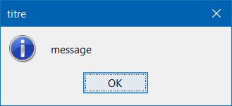 |
| JOptionPane.showMessageDialog(fenetre, "message", "titre", JOptionPane.WARNING_MESSAGE); | 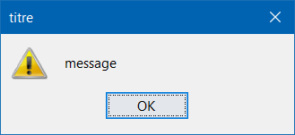 |
| JOptionPane.showMessageDialog(fenetre, "message", "titre", JOptionPane.ERROR_MESSAGE); | 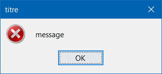 |
| JOptionPane.showMessageDialog(fenetre, "message", "titre", JOptionPane.QUESTION_MESSAGE); | 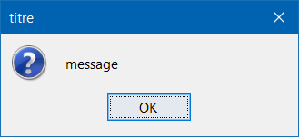 |
| JOptionPane.showMessageDialog(fenetre, "message", "titre", JOptionPane.PLAIN_MESSAGE); | 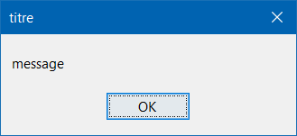 |
ConfirmDialog (pour demander une réponse de l’utilisateur parmis des possibilités)
| Instruction | Résultat |
|---|---|
| int reponse = JOptionPane.showConfirmDialog(fenetre, "message", "titre", JOptionPane.YES_NO_CANCEL_OPTION); | 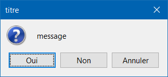 |
| int reponse = JOptionPane.showConfirmDialog(fenetre, "message", "titre", JOptionPane.YES_NO_OPTION); | 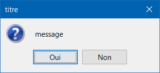 |
| int reponse = JOptionPane.showConfirmDialog(fenetre, "message", "titre", JOptionPane.OK_CANCEL_OPTION); | 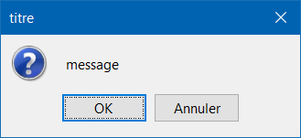 |
| int reponse = JOptionPane.showConfirmDialog(fenetre, "message", "titre", JOptionPane.DEFAULT_OPTION); | 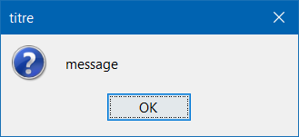 |
Oui renvoie JOptionPane.YES_OPTION qui vaut 0.
Non renvoie JOptionPane.NO_OPTION qui vaut 1.
Annuler renvoie JOptionPane.CANCEL_OPTION qui vaut 2.
Fermer la fenêtre renvoie JOptionPane.CLOSED_OPTION qui vaut -1.
InputDialog (pour demander une saisie de l’utilisateur)
| Instruction | Résultat |
|---|---|
| String reponse = JOptionPane.showInputDialog(fenetre, "message", "titre", JOptionPane.INFORMATION_MESSAGE); | 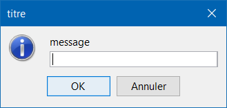 |
| String reponse = JOptionPane.showInputDialog(fenetre, "message", "titre", JOptionPane.WARNING_MESSAGE); | 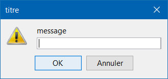 |
| String reponse = JOptionPane.showInputDialog(fenetre, "message", "titre", JOptionPane.ERROR_MESSAGE); | 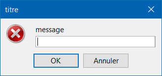 |
| String reponse = JOptionPane.showInputDialog(fenetre, "message", "titre", JOptionPane.QUESTION_MESSAGE); | 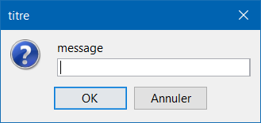 |
| String reponse = JOptionPane.showInputDialog(fenetre, "message", "titre", JOptionPane.PLAIN_MESSAGE); | 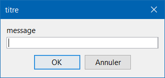 |
|
String[] choix = {"A", "B", "C", "D", "E", "F", "G", "H", "I", "J", "K", "L", "M", "N", "O", "P", "Q", "R", "S"}; String reponse = (String) JOptionPane.showInputDialog(fenetre, "message", "titre", JOptionPane.QUESTION_MESSAGE, null, choix, choix[0]); |
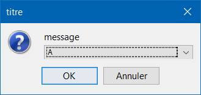 |
|
String[] choix = {"A", "B", "C", "D", "E", "F", "G", "H", "I", "J", "K", "L", "M", "N", "O", "P", "Q", "R", "S", "T"}; String reponse = (String) JOptionPane.showInputDialog(fenetre, "message", "titre", JOptionPane.QUESTION_MESSAGE, null, choix, choix[0]); |
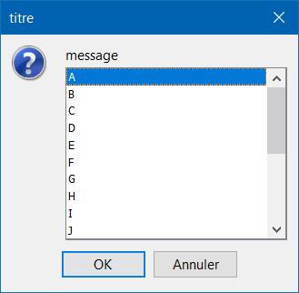 |
OptionDialog (pour choisir ses propres options de réponses)
| Instruction | Résultat |
|---|---|
|
String[] choix = {"Réponse A", "Réponse B", "Réponse C", "Réponse D"}; int reponse = JOptionPane.showOptionDialog(fenetre, "message", "titre", JOptionPane.QUESTION_MESSAGE, null, choix, choix[0]); |
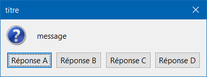 |
FileDialog (pour choisir un fichier)
| Instruction | Résultat |
|---|---|
|
FileDialog fd = new FileDialog(fenetre, "titre", FileDialog.LOAD); fd.setVisible(true); |
|
|
FileDialog fd = new FileDialog(fenetre, "titre", FileDialog.SAVE); fd.setVisible(true); |
JFileChooser (nouvelle méthode pour choisir un fichier)
| Instruction | Résultat |
|---|---|
|
JFileChooser fc = new JFileChooser(); int reponse = fc.showOpenDialog(fenetre); |
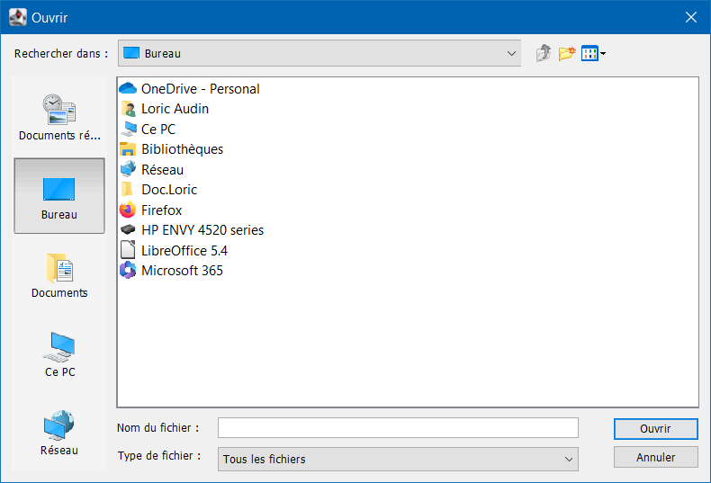 |
|
JFileChooser fc = new JFileChooser(); int reponse = fc.showSaveDialog(fenetre); |
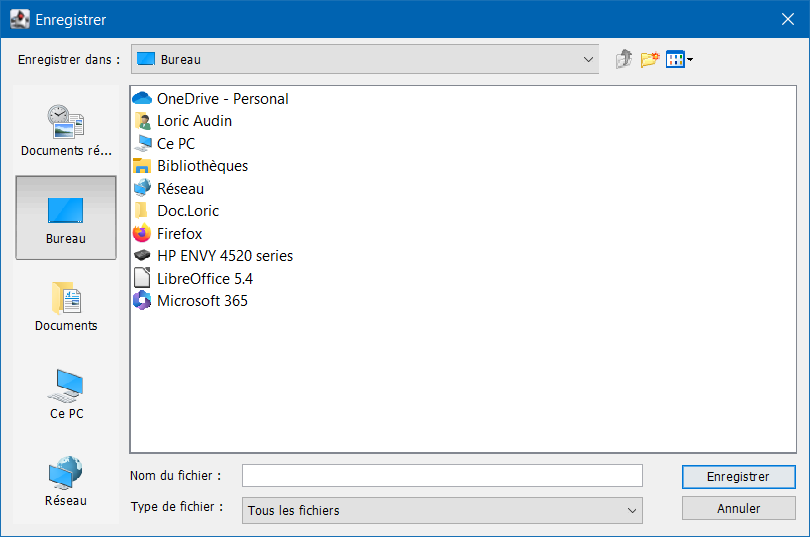 |
|
JFileChooser fc = new JFileChooser(); fc.setFileSelectionMode( JFileChooser.DIRECTORIES_ONLY ); int reponse = fc.showDialog(fenetre, "Sélectionner le dossier"); |
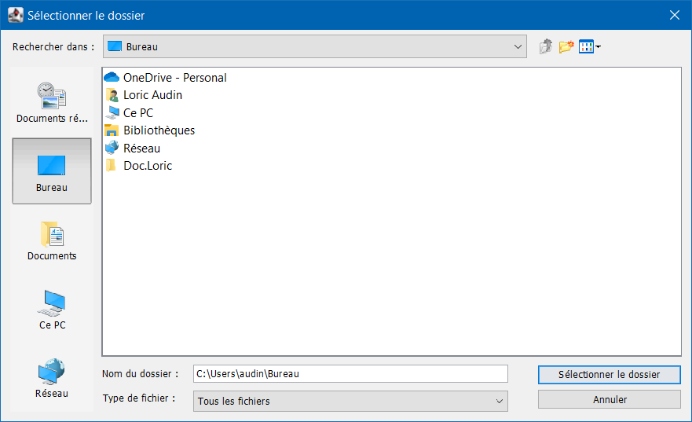 |
JColorChooser (pour choisir une couleur)
| Instruction | Résultat |
|---|---|
 |